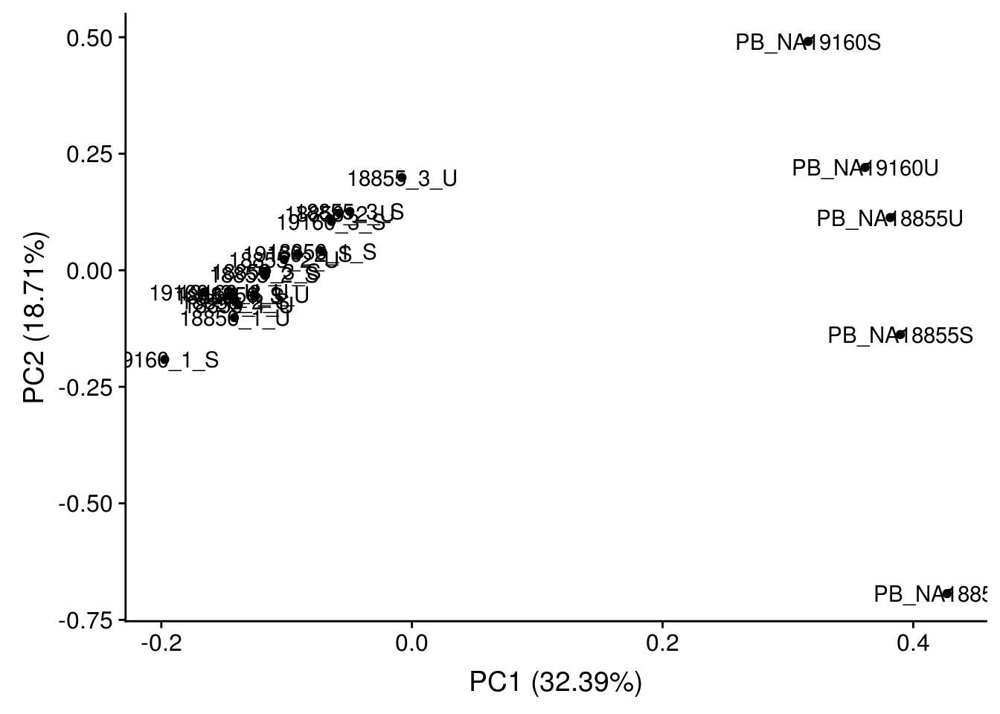

Pseudobulk
Anthony Hung
2020-02-24
Last updated: 2020-03-10
Checks: 6 1
Knit directory: OAStrain/
This reproducible R Markdown analysis was created with workflowr (version 1.5.0). The Checks tab describes the reproducibility checks that were applied when the results were created. The Past versions tab lists the development history.
The R Markdown file has unstaged changes. To know which version of the R Markdown file created these results, you’ll want to first commit it to the Git repo. If you’re still working on the analysis, you can ignore this warning. When you’re finished, you can run wflow_publish to commit the R Markdown file and build the HTML.
Great job! The global environment was empty. Objects defined in the global environment can affect the analysis in your R Markdown file in unknown ways. For reproduciblity it’s best to always run the code in an empty environment.
The command set.seed(20191127) was run prior to running the code in the R Markdown file. Setting a seed ensures that any results that rely on randomness, e.g. subsampling or permutations, are reproducible.
Great job! Recording the operating system, R version, and package versions is critical for reproducibility.
Nice! There were no cached chunks for this analysis, so you can be confident that you successfully produced the results during this run.
Great job! Using relative paths to the files within your workflowr project makes it easier to run your code on other machines.
Great! You are using Git for version control. Tracking code development and connecting the code version to the results is critical for reproducibility. The version displayed above was the version of the Git repository at the time these results were generated.
Note that you need to be careful to ensure that all relevant files for the analysis have been committed to Git prior to generating the results (you can use wflow_publish or wflow_git_commit). workflowr only checks the R Markdown file, but you know if there are other scripts or data files that it depends on. Below is the status of the Git repository when the results were generated:
Ignored files:
Ignored: .RData
Ignored: .Rhistory
Ignored: .Rproj.user/
Ignored: analysis/figure/
Ignored: data/ANT1_2.rds
Ignored: data/Combined_singlecell_data.rds
Ignored: data/Combined_singlecell_data_allGenes.rds
Ignored: data/Combined_singlecell_data_allGenes_normalized.rds
Ignored: data/Combined_singlecell_data_first.rds
Ignored: data/GoMresults.rds
Ignored: data/GoMresultsk3.rds
Ignored: data/GoMresultsk4.rds
Ignored: data/GoMresultsk5.rds
Ignored: data/GoMresultsk6.rds
Ignored: data/GoMresultsk7.rds
Ignored: data/GoMresultsk8.rds
Ignored: data/HumanLiverSeurat.rds
Ignored: data/RUVsCPM.rds
Ignored: data/RUVsOut.rds
Ignored: data/filtered_counts.rds
Ignored: data/humanLiverSubset_hepatocytes.rds
Ignored: data/norm_filtered_counts.rds
Ignored: data/raw_counts_relabeled.rds
Ignored: output/ANT1.2.rds
Unstaged changes:
Modified: analysis/Pilot_GoMAnalysis.Rmd
Modified: analysis/Pseudobulk.Rmd
Note that any generated files, e.g. HTML, png, CSS, etc., are not included in this status report because it is ok for generated content to have uncommitted changes.
These are the previous versions of the R Markdown and HTML files. If you’ve configured a remote Git repository (see ?wflow_git_remote), click on the hyperlinks in the table below to view them.
| File | Version | Author | Date | Message |
|---|---|---|---|---|
| Rmd | c9015d5 | Anthony Hung | 2020-03-09 | Revise pseudobulk to use raw counts not normalized |
| html | c9015d5 | Anthony Hung | 2020-03-09 | Revise pseudobulk to use raw counts not normalized |
| Rmd | f9ae4fa | Anthony Hung | 2020-02-27 | correlation pseudobulk |
| html | f9ae4fa | Anthony Hung | 2020-02-27 | correlation pseudobulk |
| Rmd | e0cb972 | Anthony Hung | 2020-02-24 | Separate out sample based on origin; also add pseudobulk |
| html | e0cb972 | Anthony Hung | 2020-02-24 | Separate out sample based on origin; also add pseudobulk |
Comparison of single-cell data (pseudobulked) with bulk data from pilot study
library("Seurat")
library("slam")
library("dplyr")
Attaching package: 'dplyr'The following objects are masked from 'package:stats':
filter, lagThe following objects are masked from 'package:base':
intersect, setdiff, setequal, unionlibrary("RColorBrewer")
library("scales")
library("cowplot")Loading required package: ggplot2
Attaching package: 'cowplot'The following object is masked from 'package:ggplot2':
ggsavelibrary("ggplot2")
library("ggfortify")
library("gplots")
Attaching package: 'gplots'The following object is masked from 'package:stats':
lowesslibrary("ggpubr")Loading required package: magrittr
Attaching package: 'ggpubr'The following object is masked from 'package:cowplot':
get_legendlibrary("gridExtra")
Attaching package: 'gridExtra'The following object is masked from 'package:dplyr':
combine# load gene annotations
gene_anno <- read.delim("data/gene-annotation.txt",
sep = "\t")
# Load colors
colors <- colorRampPalette(c(brewer.pal(9, "Blues")[1],brewer.pal(9, "Blues")[9]))(100)
pal <- c(brewer.pal(9, "Set1"), brewer.pal(8, "Set2"), brewer.pal(12, "Set3"))
#load pilot data bulk
raw_counts <- as.matrix(readRDS("data/raw_counts_relabeled.rds"))
# remove rows with 0 counts
raw_counts <- raw_counts[apply(raw_counts, 1, function(x) !all(x==0)),]
dim(raw_counts)[1] 32936 17#load pilot data sc
ANT1.2 <- readRDS("data/ANT1_2.rds")pseudobulk the sc data
scData <- data.frame(ANT1.2@assays$RNA@counts)
labels <- ANT1.2@meta.data$labels
PB_NA18856U <- row_sums(scData[, labels == "NA18856_Unstrain"])
PB_NA18855U <- row_sums(scData[, labels == "NA18855_Unstrain"])
PB_NA18855S <- row_sums(scData[, labels == "NA18855_Strain"])
PB_NA19160U <- row_sums(scData[, labels == "NA19160_Unstrain"])
PB_NA19160S <- row_sums(scData[, labels == "NA19160_Strain"])
PB_combined <- cbind(PB_NA18856U, PB_NA18855U, PB_NA18855S, PB_NA19160U, PB_NA19160S)
rownames(PB_combined) <- gene_anno$ensembl_gene_id[match(unlist(rownames(PB_combined)), gene_anno$external_gene_name)]
#Merge
Merged_bulk <- merge(raw_counts, PB_combined, by = "row.names")Warning in data.row.names(row.names, rowsi, i): some row.names duplicated:
3000,4800,5439,5834,5954,6095,6463,6917,9598,11685,12723,13265,14009,14543,16460,17073,19044,20259,21712,23967,26225,32975,33394
--> row.names NOT usedrow.names(Merged_bulk) <- Merged_bulk$Row.names
Merged_bulk <- Merged_bulk[,-1]Raw analysis
Clustering (PCA)
# Perform PCA
pca_genes <- prcomp(t(Merged_bulk), scale = T)
#Make PCA plots
autoplot(pca_genes, label = T)
| Version | Author | Date |
|---|---|---|
| c9015d5 | Anthony Hung | 2020-03-09 |
Clustering (corr heatmap)
#Corr heatmap
cors <- cor(Merged_bulk, method="spearman", use="pairwise.complete.obs")
heatmap.2(cors, scale="none", margins = c(12, 12), trace='none', denscol="white",
cexCol = 0.1 + 1/log10(15), cexRow = 0.1 + 1/log10(15))
| Version | Author | Date |
|---|---|---|
| e0cb972 | Anthony Hung | 2020-02-24 |
Correlation between Pseudobulk and bulk from same replicate (raw counts)
cors_pseudobulk <- cors[18:22,1:17]
heatmap.2(cors_pseudobulk, scale="none", margins = c(12, 12), trace='none', denscol="white",
cexCol = 0.1 + 1/log10(15), cexRow = 0.1 + 1/log10(15))
data.frame(Merged_bulk) %>% ggplot(aes(x = `PB_NA18856U`, y = `X18856_3_U`)) +
geom_point() +
geom_smooth(method='lm') +
stat_cor(method = "spearman", cor.coef.name = c("rho")) +
stat_cor(method = "pearson", cor.coef.name = c("r"), label.x.npc = "middle", label.y.npc = "top") +
scale_x_log10()+
scale_y_log10()Warning: Transformation introduced infinite values in continuous x-axisWarning: Transformation introduced infinite values in continuous y-axisWarning: Transformation introduced infinite values in continuous x-axisWarning: Transformation introduced infinite values in continuous y-axisWarning: Transformation introduced infinite values in continuous x-axisWarning: Transformation introduced infinite values in continuous y-axisWarning: Transformation introduced infinite values in continuous x-axisWarning: Transformation introduced infinite values in continuous y-axisWarning: Removed 7780 rows containing non-finite values (stat_smooth).Warning: Removed 7780 rows containing non-finite values (stat_cor).
Warning: Removed 7780 rows containing non-finite values (stat_cor).
data.frame(Merged_bulk) %>% ggplot(aes(x = `PB_NA18855U`, y = `X18855_3_U`)) +
geom_point() +
geom_smooth(method='lm') +
stat_cor(method = "spearman", cor.coef.name = c("rho")) +
stat_cor(method = "pearson", cor.coef.name = c("r"), label.x.npc = "middle", label.y.npc = "top") +
scale_x_log10()+
scale_y_log10()Warning: Transformation introduced infinite values in continuous x-axisWarning: Transformation introduced infinite values in continuous y-axisWarning: Transformation introduced infinite values in continuous x-axisWarning: Transformation introduced infinite values in continuous y-axisWarning: Transformation introduced infinite values in continuous x-axisWarning: Transformation introduced infinite values in continuous y-axisWarning: Transformation introduced infinite values in continuous x-axisWarning: Transformation introduced infinite values in continuous y-axisWarning: Removed 8270 rows containing non-finite values (stat_smooth).Warning: Removed 8270 rows containing non-finite values (stat_cor).
Warning: Removed 8270 rows containing non-finite values (stat_cor).
data.frame(Merged_bulk) %>% ggplot(aes(x = `PB_NA18855S`, y = `X18855_3_S`)) +
geom_point() +
geom_smooth(method='lm') +
stat_cor(method = "spearman", cor.coef.name = c("rho")) +
stat_cor(method = "pearson", cor.coef.name = c("r"), label.x.npc = "middle", label.y.npc = "top") +
scale_x_log10()+
scale_y_log10()Warning: Transformation introduced infinite values in continuous x-axisWarning: Transformation introduced infinite values in continuous y-axisWarning: Transformation introduced infinite values in continuous x-axisWarning: Transformation introduced infinite values in continuous y-axisWarning: Transformation introduced infinite values in continuous x-axisWarning: Transformation introduced infinite values in continuous y-axisWarning: Transformation introduced infinite values in continuous x-axisWarning: Transformation introduced infinite values in continuous y-axisWarning: Removed 8075 rows containing non-finite values (stat_smooth).Warning: Removed 8075 rows containing non-finite values (stat_cor).
Warning: Removed 8075 rows containing non-finite values (stat_cor).
data.frame(Merged_bulk) %>% ggplot(aes(x = `PB_NA19160U`, y = `X19160_3_U`)) +
geom_point() +
geom_smooth(method='lm') +
stat_cor(method = "spearman", cor.coef.name = c("rho")) +
stat_cor(method = "pearson", cor.coef.name = c("r"), label.x.npc = "middle", label.y.npc = "top") +
scale_x_log10()+
scale_y_log10()Warning: Transformation introduced infinite values in continuous x-axisWarning: Transformation introduced infinite values in continuous y-axisWarning: Transformation introduced infinite values in continuous x-axisWarning: Transformation introduced infinite values in continuous y-axisWarning: Transformation introduced infinite values in continuous x-axisWarning: Transformation introduced infinite values in continuous y-axisWarning: Transformation introduced infinite values in continuous x-axisWarning: Transformation introduced infinite values in continuous y-axisWarning: Removed 7980 rows containing non-finite values (stat_smooth).Warning: Removed 7980 rows containing non-finite values (stat_cor).
Warning: Removed 7980 rows containing non-finite values (stat_cor).
data.frame(Merged_bulk) %>% ggplot(aes(x = `PB_NA19160S`, y = `X19160_3_S`)) +
geom_point() +
geom_smooth(method='lm') +
stat_cor(method = "spearman", cor.coef.name = c("rho")) +
stat_cor(method = "pearson", cor.coef.name = c("r"), label.x.npc = "middle", label.y.npc = "top") +
scale_x_log10()+
scale_y_log10()Warning: Transformation introduced infinite values in continuous x-axisWarning: Transformation introduced infinite values in continuous y-axisWarning: Transformation introduced infinite values in continuous x-axisWarning: Transformation introduced infinite values in continuous y-axisWarning: Transformation introduced infinite values in continuous x-axisWarning: Transformation introduced infinite values in continuous y-axisWarning: Transformation introduced infinite values in continuous x-axisWarning: Transformation introduced infinite values in continuous y-axisWarning: Removed 8706 rows containing non-finite values (stat_smooth).Warning: Removed 8706 rows containing non-finite values (stat_cor).
Warning: Removed 8706 rows containing non-finite values (stat_cor).
| Version | Author | Date |
|---|---|---|
| c9015d5 | Anthony Hung | 2020-03-09 |
Correlation between Pseudobulk and bulk from different individuals in the same replicate, same treatment (raw counts)
PB_NA18856U_X18855_3_U <- data.frame(Merged_bulk) %>% ggplot(aes(x = `PB_NA18856U`, y = `X18855_3_U`)) +
geom_point() +
geom_smooth(method='lm') +
stat_cor(method = "spearman", cor.coef.name = c("rho")) +
stat_cor(method = "pearson", cor.coef.name = c("r"), label.x.npc = "middle", label.y.npc = "top") +
scale_x_log10()+
scale_y_log10()
PB_NA18856U_X19160_3_U <- data.frame(Merged_bulk) %>% ggplot(aes(x = `PB_NA18856U`, y = `X19160_3_U`)) +
geom_point() +
geom_smooth(method='lm') +
stat_cor(method = "spearman", cor.coef.name = c("rho")) +
stat_cor(method = "pearson", cor.coef.name = c("r"), label.x.npc = "middle", label.y.npc = "top") +
scale_x_log10()+
scale_y_log10()
grid.arrange(PB_NA18856U_X18855_3_U, PB_NA18856U_X19160_3_U)Warning: Transformation introduced infinite values in continuous x-axisWarning: Transformation introduced infinite values in continuous y-axisWarning: Transformation introduced infinite values in continuous x-axisWarning: Transformation introduced infinite values in continuous y-axisWarning: Transformation introduced infinite values in continuous x-axisWarning: Transformation introduced infinite values in continuous y-axisWarning: Transformation introduced infinite values in continuous x-axisWarning: Transformation introduced infinite values in continuous y-axisWarning: Removed 8073 rows containing non-finite values (stat_smooth).Warning: Removed 8073 rows containing non-finite values (stat_cor).
Warning: Removed 8073 rows containing non-finite values (stat_cor).Warning: Transformation introduced infinite values in continuous x-axisWarning: Transformation introduced infinite values in continuous y-axisWarning: Transformation introduced infinite values in continuous x-axisWarning: Transformation introduced infinite values in continuous y-axisWarning: Transformation introduced infinite values in continuous x-axisWarning: Transformation introduced infinite values in continuous y-axisWarning: Transformation introduced infinite values in continuous x-axisWarning: Transformation introduced infinite values in continuous y-axisWarning: Removed 7589 rows containing non-finite values (stat_smooth).Warning: Removed 7589 rows containing non-finite values (stat_cor).
Warning: Removed 7589 rows containing non-finite values (stat_cor).
PB_NA18855U_X18856_3_U <- data.frame(Merged_bulk) %>% ggplot(aes(x = `PB_NA18855U`, y = `X18856_3_U`)) +
geom_point() +
geom_smooth(method='lm') +
stat_cor(method = "spearman", cor.coef.name = c("rho")) +
stat_cor(method = "pearson", cor.coef.name = c("r"), label.x.npc = "middle", label.y.npc = "top") +
scale_x_log10()+
scale_y_log10()
PB_NA18855U_X19160_3_U <- data.frame(Merged_bulk) %>% ggplot(aes(x = `PB_NA18855U`, y = `X19160_3_U`)) +
geom_point() +
geom_smooth(method='lm') +
stat_cor(method = "spearman", cor.coef.name = c("rho")) +
stat_cor(method = "pearson", cor.coef.name = c("r"), label.x.npc = "middle", label.y.npc = "top") +
scale_x_log10()+
scale_y_log10()
grid.arrange(PB_NA18855U_X18856_3_U, PB_NA18855U_X19160_3_U)Warning: Transformation introduced infinite values in continuous x-axisWarning: Transformation introduced infinite values in continuous y-axisWarning: Transformation introduced infinite values in continuous x-axisWarning: Transformation introduced infinite values in continuous y-axisWarning: Transformation introduced infinite values in continuous x-axisWarning: Transformation introduced infinite values in continuous y-axisWarning: Transformation introduced infinite values in continuous x-axisWarning: Transformation introduced infinite values in continuous y-axisWarning: Removed 8191 rows containing non-finite values (stat_smooth).Warning: Removed 8191 rows containing non-finite values (stat_cor).
Warning: Removed 8191 rows containing non-finite values (stat_cor).Warning: Transformation introduced infinite values in continuous x-axisWarning: Transformation introduced infinite values in continuous y-axisWarning: Transformation introduced infinite values in continuous x-axisWarning: Transformation introduced infinite values in continuous y-axisWarning: Transformation introduced infinite values in continuous x-axisWarning: Transformation introduced infinite values in continuous y-axisWarning: Transformation introduced infinite values in continuous x-axisWarning: Transformation introduced infinite values in continuous y-axisWarning: Removed 7940 rows containing non-finite values (stat_smooth).Warning: Removed 7940 rows containing non-finite values (stat_cor).
Warning: Removed 7940 rows containing non-finite values (stat_cor).
PB_NA19160U_X18856_3_U <- data.frame(Merged_bulk) %>% ggplot(aes(x = `PB_NA19160U`, y = `X18856_3_U`)) +
geom_point() +
geom_smooth(method='lm') +
stat_cor(method = "spearman", cor.coef.name = c("rho")) +
stat_cor(method = "pearson", cor.coef.name = c("r"), label.x.npc = "middle", label.y.npc = "top") +
scale_x_log10()+
scale_y_log10()
PB_NA19160U_X18855_3_U <- data.frame(Merged_bulk) %>% ggplot(aes(x = `PB_NA19160U`, y = `X18855_3_U`)) +
geom_point() +
geom_smooth(method='lm') +
stat_cor(method = "spearman", cor.coef.name = c("rho")) +
stat_cor(method = "pearson", cor.coef.name = c("r"), label.x.npc = "middle", label.y.npc = "top") +
scale_x_log10()+
scale_y_log10()
grid.arrange(PB_NA18855U_X18856_3_U, PB_NA18855U_X19160_3_U)Warning: Transformation introduced infinite values in continuous x-axisWarning: Transformation introduced infinite values in continuous y-axisWarning: Transformation introduced infinite values in continuous x-axisWarning: Transformation introduced infinite values in continuous y-axisWarning: Transformation introduced infinite values in continuous x-axisWarning: Transformation introduced infinite values in continuous y-axisWarning: Transformation introduced infinite values in continuous x-axisWarning: Transformation introduced infinite values in continuous y-axisWarning: Removed 8191 rows containing non-finite values (stat_smooth).Warning: Removed 8191 rows containing non-finite values (stat_cor).
Warning: Removed 8191 rows containing non-finite values (stat_cor).Warning: Transformation introduced infinite values in continuous x-axisWarning: Transformation introduced infinite values in continuous y-axisWarning: Transformation introduced infinite values in continuous x-axisWarning: Transformation introduced infinite values in continuous y-axisWarning: Transformation introduced infinite values in continuous x-axisWarning: Transformation introduced infinite values in continuous y-axisWarning: Transformation introduced infinite values in continuous x-axisWarning: Transformation introduced infinite values in continuous y-axisWarning: Removed 7940 rows containing non-finite values (stat_smooth).Warning: Removed 7940 rows containing non-finite values (stat_cor).
Warning: Removed 7940 rows containing non-finite values (stat_cor).
data.frame(Merged_bulk) %>% ggplot(aes(x = `PB_NA18855S`, y = `X19160_3_S`)) +
geom_point() +
geom_smooth(method='lm') +
stat_cor(method = "spearman", cor.coef.name = c("rho")) +
stat_cor(method = "pearson", cor.coef.name = c("r"), label.x.npc = "middle", label.y.npc = "top") +
scale_x_log10()+
scale_y_log10()Warning: Transformation introduced infinite values in continuous x-axisWarning: Transformation introduced infinite values in continuous y-axisWarning: Transformation introduced infinite values in continuous x-axisWarning: Transformation introduced infinite values in continuous y-axisWarning: Transformation introduced infinite values in continuous x-axisWarning: Transformation introduced infinite values in continuous y-axisWarning: Transformation introduced infinite values in continuous x-axisWarning: Transformation introduced infinite values in continuous y-axisWarning: Removed 8047 rows containing non-finite values (stat_smooth).Warning: Removed 8047 rows containing non-finite values (stat_cor).
Warning: Removed 8047 rows containing non-finite values (stat_cor).
data.frame(Merged_bulk) %>% ggplot(aes(x = `PB_NA19160S`, y = `X18855_3_S`)) +
geom_point() +
geom_smooth(method='lm') +
stat_cor(method = "spearman", cor.coef.name = c("rho")) +
stat_cor(method = "pearson", cor.coef.name = c("r"), label.x.npc = "middle", label.y.npc = "top") +
scale_x_log10()+
scale_y_log10()Warning: Transformation introduced infinite values in continuous x-axisWarning: Transformation introduced infinite values in continuous y-axisWarning: Transformation introduced infinite values in continuous x-axisWarning: Transformation introduced infinite values in continuous y-axisWarning: Transformation introduced infinite values in continuous x-axisWarning: Transformation introduced infinite values in continuous y-axisWarning: Transformation introduced infinite values in continuous x-axisWarning: Transformation introduced infinite values in continuous y-axisWarning: Removed 8951 rows containing non-finite values (stat_smooth).Warning: Removed 8951 rows containing non-finite values (stat_cor).
Warning: Removed 8951 rows containing non-finite values (stat_cor).
sessionInfo()R version 3.4.3 (2017-11-30)
Platform: x86_64-pc-linux-gnu (64-bit)
Running under: Scientific Linux 7.4 (Nitrogen)
Matrix products: default
BLAS/LAPACK: /software/openblas-0.2.19-el7-x86_64/lib/libopenblas_haswellp-r0.2.19.so
locale:
[1] LC_CTYPE=en_US.UTF-8 LC_NUMERIC=C
[3] LC_TIME=en_US.UTF-8 LC_COLLATE=en_US.UTF-8
[5] LC_MONETARY=en_US.UTF-8 LC_MESSAGES=en_US.UTF-8
[7] LC_PAPER=en_US.UTF-8 LC_NAME=C
[9] LC_ADDRESS=C LC_TELEPHONE=C
[11] LC_MEASUREMENT=en_US.UTF-8 LC_IDENTIFICATION=C
attached base packages:
[1] stats graphics grDevices utils datasets methods base
other attached packages:
[1] gridExtra_2.3 ggpubr_0.2.5 magrittr_1.5 gplots_3.0.1.1
[5] ggfortify_0.4.8 cowplot_0.9.3 ggplot2_3.2.1 scales_1.1.0
[9] RColorBrewer_1.1-2 dplyr_0.8.3 slam_0.1-47 Seurat_3.1.1
loaded via a namespace (and not attached):
[1] TH.data_1.0-10 Rtsne_0.15 colorspace_1.4-1
[4] ggsignif_0.6.0 ggridges_0.5.1 rprojroot_1.3-2
[7] fs_1.3.1 farver_2.0.3 leiden_0.3.1
[10] listenv_0.8.0 npsurv_0.4-0 ggrepel_0.8.1
[13] mvtnorm_1.0-7 codetools_0.2-15 splines_3.4.3
[16] R.methodsS3_1.7.1 mnormt_1.5-5 lsei_1.2-0
[19] knitr_1.26 TFisher_0.2.0 zeallot_0.1.0
[22] jsonlite_1.6 workflowr_1.5.0 ica_1.0-2
[25] cluster_2.0.6 png_0.1-7 R.oo_1.23.0
[28] uwot_0.1.5 sctransform_0.2.0 compiler_3.4.3
[31] httr_1.4.1 backports_1.1.5 assertthat_0.2.1
[34] Matrix_1.2-18 lazyeval_0.2.2 later_1.0.0
[37] htmltools_0.4.0 tools_3.4.3 rsvd_1.0.2
[40] igraph_1.2.4.2 gtable_0.3.0 glue_1.3.1
[43] RANN_2.6.1 reshape2_1.4.3 Rcpp_1.0.3
[46] Biobase_2.38.0 vctrs_0.2.0 multtest_2.34.0
[49] gdata_2.18.0 ape_5.3 nlme_3.1-131
[52] gbRd_0.4-11 lmtest_0.9-37 xfun_0.12
[55] stringr_1.4.0 globals_0.12.5 lifecycle_0.1.0
[58] irlba_2.3.3 gtools_3.8.1 future_1.15.1
[61] MASS_7.3-51.4 zoo_1.8-6 promises_1.1.0
[64] parallel_3.4.3 sandwich_2.5-1 yaml_2.2.0
[67] reticulate_1.13 pbapply_1.4-2 stringi_1.4.3
[70] mutoss_0.1-12 plotrix_3.7-2 caTools_1.17.1.3
[73] BiocGenerics_0.24.0 bibtex_0.4.2 Rdpack_0.11-0
[76] SDMTools_1.1-221.2 rlang_0.4.4 pkgconfig_2.0.3
[79] bitops_1.0-6 evaluate_0.14 lattice_0.20-35
[82] ROCR_1.0-7 purrr_0.3.3 labeling_0.3
[85] htmlwidgets_1.5.1 tidyselect_0.2.5 RcppAnnoy_0.0.14
[88] plyr_1.8.4 R6_2.4.1 multcomp_1.4-8
[91] withr_2.1.2 pillar_1.4.2 whisker_0.4
[94] sn_1.5-4 fitdistrplus_1.0-14 survival_2.41-3
[97] tsne_0.1-3 tibble_2.1.3 future.apply_1.3.0
[100] crayon_1.3.4 KernSmooth_2.23-15 plotly_4.9.1
[103] rmarkdown_1.18 grid_3.4.3 data.table_1.12.6
[106] git2r_0.26.1 metap_1.2 digest_0.6.23
[109] tidyr_1.0.0 httpuv_1.5.2 numDeriv_2016.8-1.1
[112] R.utils_2.9.2 RcppParallel_4.4.4 stats4_3.4.3
[115] munsell_0.5.0 viridisLite_0.3.0